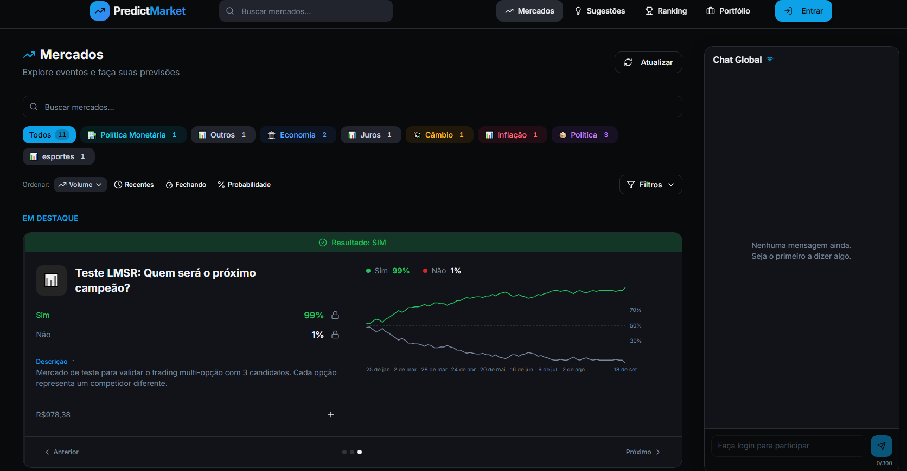
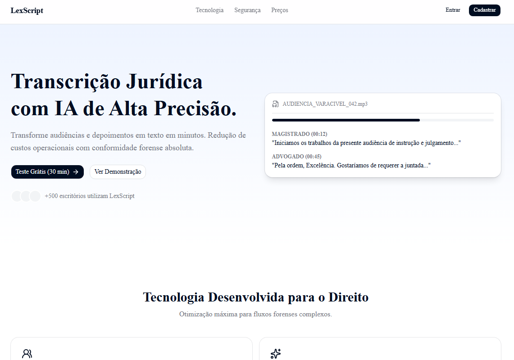
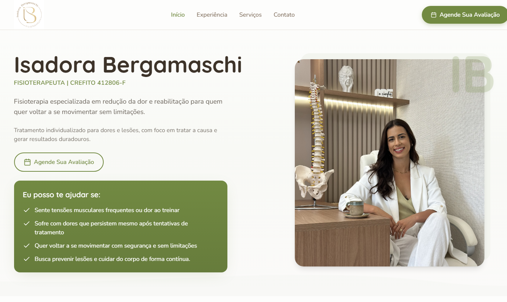
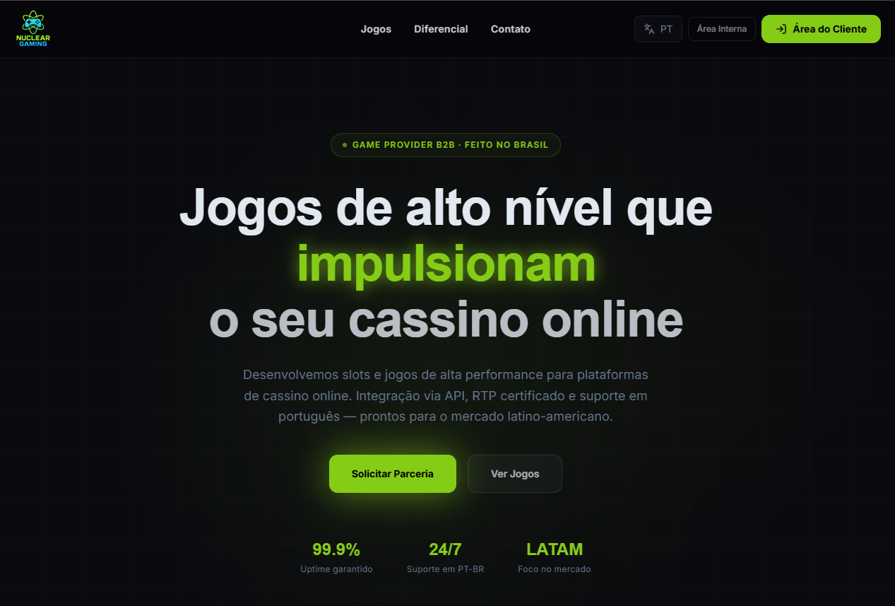
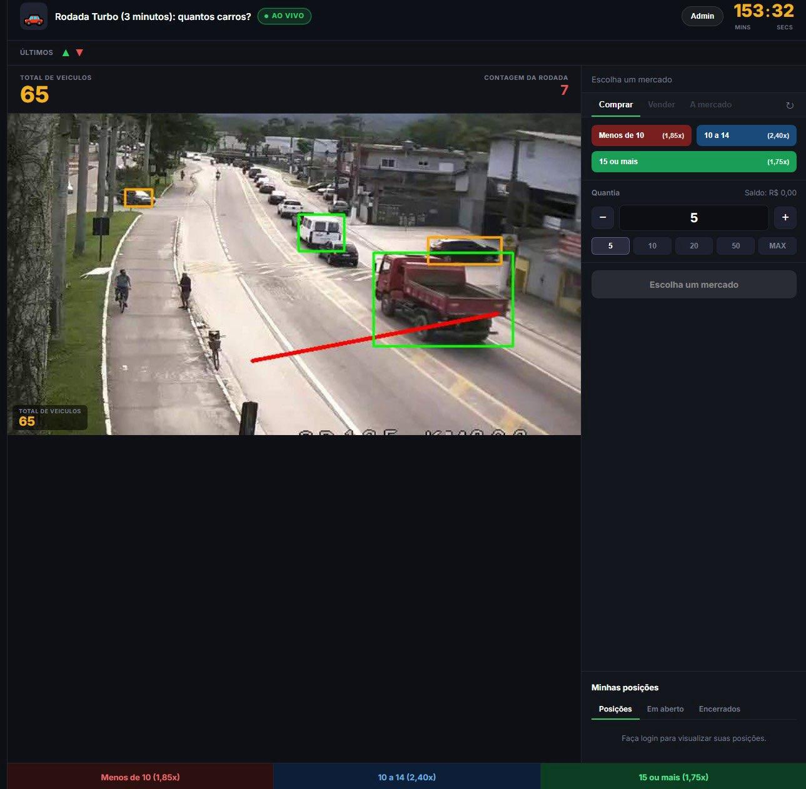
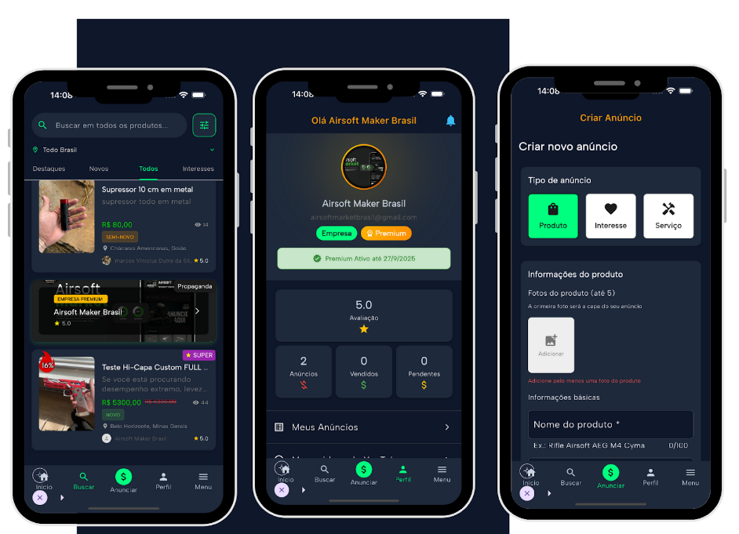

Sobre
Desenvolvedor de Software Sênior — Full Stack, Arquitetura e Desenvolvimento de Sistemas. 9 anos de experiência projetando e construindo sistemas escaláveis, do backend ao frontend, com foco em arquitetura sólida, código limpo e decisões técnicas que sustentam o produto no longo prazo. Já atuei em todo o ciclo de vida de software: levantamento de requisitos, modelagem de arquitetura, desenvolvimento, code review, deploy e manutenção em produção.
Stacks
Backend
Frontend
Arquitetura
Bancos e dados
Cloud
DevOps
Qualidade
Observabilidade
IA & Machine Learning
Automações
Mobile
Serviço
-
01
Você compartilha sua ideia, necessidade ou desafio.
-
02
Eu analiso o projeto e defino a melhor solução, com escopo e prazo claros desde o início.
-
03
Durante o desenvolvimento, você acompanha a evolução e recebe atualizações de cada etapa.
-
04
No final, você recebe tudo testado, documentado e pronto para funcionar, seja na web ou no mobile.
-
05
Suporte ativo: mesmo depois de entregar sua demanda, ainda estarei dando suporte caso necessite.
Portfolio
Landing page feita para escritório de advocacia.

Plataforma de mercado preditivo, com chat ao vivo, painel de usuários, dashboard de admin e scraping de APIs.

MVP de um SaaS de transcrição voz-para-texto de audiências.

Landing page para clínica de fisioterapia (site publicado e funcional).

Página web para game provider de cassinos, com área de clientes e área interna para admins (publicado e funcional).

Jogo de apostas do tipo chaos betting, feito em Python e YOLO (IA que detecta objetos). Projeto em andamento.

Aplicativo mobile feito com Flutter e Firebase, postado no Google Play e na App Store (projeto publicado).